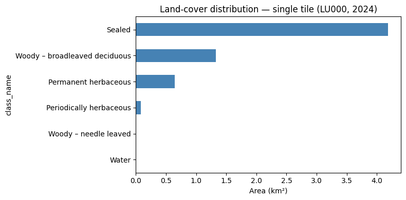
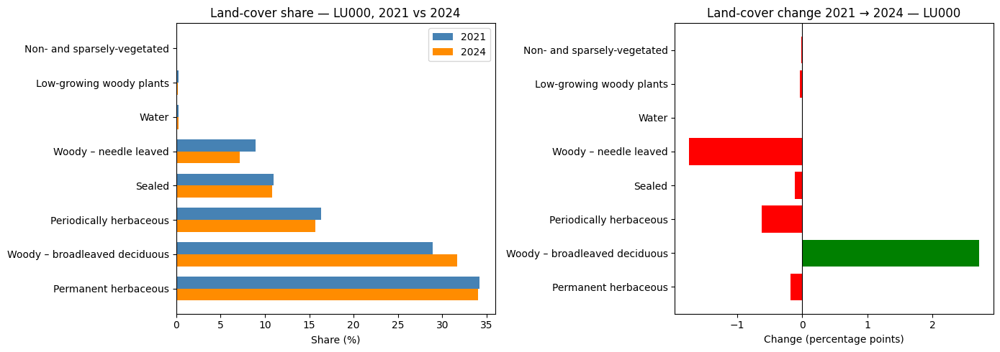

import geopandas as gpd
import requests
import json
api_url = "https://funathon-2026-project3-api.lab.sspcloud.fr"
image_filepath = (
"projet-funathon/"
"2026/project3/data/images/LU000/2024/"
"4042000_2951690_0_637.tif"
)
response_pred = requests.get(
f"{api_url}/predict_image",
params={"image": image_filepath, "polygons": True},
)
gdf_tile = gpd.GeoDataFrame.from_features(
json.loads(response_pred.json())["features"],
crs="EPSG:3035",
)Statistics
1 Statistics on a single Sentinel-2 image
Once a single tile has been predicted, you can compute land-cover statistics at the image level. This is useful for quickly inspecting the composition of a specific area before scaling up to the full NUTS3 region.
1.1 Produce the predictions
Using the API explored in the previous step, the predictions can be easily produced again.
class_names = {
1: "Sealed",
2: "Woody – needle leaved",
3: "Woody – broadleaved deciduous",
4: "Woody – broadleaved evergreen",
5: "Low-growing woody plants",
6: "Permanent herbaceous",
7: "Periodically herbaceous",
8: "Lichens and mosses",
9: "Non- and sparsely-vegetated",
10: "Water",
}
gdf_tile["area_m2"] = gdf_tile.geometry.area
gdf_tile["area_km2"] = gdf_tile["area_m2"] / 1e6
gdf_tile["class_name"] = gdf_tile["label"].map(class_names)1.2 Compute area statistics per class
CautionExercise 1 — Compute land-cover area statistics for a single tile
Goal: Group the predicted polygons by land-cover class and compute the total area, number of polygons, mean and max polygon size for each class. Then calculate each class’s share of the total tile area. Display the result as a GT table with formatted columns and colour-coded shares.
Steps:
- Group
gdf_tilebylabelandclass_nameusing.groupby().agg() - Compute
n_polygons,total_area_km2,mean_polygon_area_m2,max_polygon_area_m2 - Compute
total_km2as the sum of all class areas - Add a
share_pctcolumn as the percentage of total area - Display with
GT— format numbers and colourshare_pct
from great_tables import GT, style, loc
stats_tile = (
gdf_tile.groupby(["label", "class_name"])
.agg(
n_polygons = ("geometry", "__"), # TODO: aggregation function (str)
total_area_km2 = ("area_km2", "__"), # TODO: aggregation function (str)
mean_polygon_area_m2 = ("area_m2", "__"), # TODO: aggregation function (str)
max_polygon_area_m2 = ("area_m2", "__"), # TODO: aggregation function (str)
)
.reset_index()
.sort_values("total_area_km2", ascending=False)
)
total_km2 = __ # TODO: sum of all total_area_km2
stats_tile["share_pct"] = (__ / total_km2 * 100).round(2) # TODO: column to normalise
(
GT(stats_tile, rowname_col="class_name")
.tab_header(title="Land-cover statistics — single tile (LU000, 2024)")
.cols_label(
label = "Label",
n_polygons = "N polygons",
total_area_km2 = "Total area (km²)",
mean_polygon_area_m2 = "Mean area (m²)",
max_polygon_area_m2 = "Max area (m²)",
share_pct = "Share (%)",
)
.fmt_number(columns=["total_area_km2"], decimals=2)
.fmt_number(columns=["mean_polygon_area_m2", "max_polygon_area_m2"], decimals=0)
.fmt_number(columns=["share_pct"], decimals=1)
.data_color(columns=["share_pct"], palette=["white", "steelblue"])
)
TipHint
- Use
"count"forn_polygons,"sum"for totals,"mean"and"max"for polygon size statistics. total_km2 = stats_tile["total_area_km2"].sum().share_pct = stats_tile["total_area_km2"] / total_km2 * 100.- Pass
rowname_col="class_name"toGT()to use class names as row labels.
TipSolution
from great_tables import GT, style, loc
stats_tile = (
gdf_tile.groupby(["label", "class_name"])
.agg(
n_polygons = ("geometry", "count"),
total_area_km2 = ("area_km2", "sum"),
mean_polygon_area_m2 = ("area_m2", "mean"),
max_polygon_area_m2 = ("area_m2", "max"),
)
.reset_index()
.sort_values("total_area_km2", ascending=False)
)
total_km2 = stats_tile["total_area_km2"].sum()
stats_tile["share_pct"] = (stats_tile["total_area_km2"] / total_km2 * 100).round(2)
(
GT(stats_tile, rowname_col="class_name")
.tab_header(title="Land-cover statistics — single tile (LU000, 2024)")
.cols_label(
label = "Label",
n_polygons = "N polygons",
total_area_km2 = "Total area (km²)",
mean_polygon_area_m2 = "Mean area (m²)",
max_polygon_area_m2 = "Max area (m²)",
share_pct = "Share (%)",
)
.fmt_number(columns=["total_area_km2"], decimals=2)
.fmt_number(columns=["mean_polygon_area_m2", "max_polygon_area_m2"], decimals=0)
.fmt_number(columns=["share_pct"], decimals=1)
.data_color(columns=["share_pct"], palette=["white", "steelblue"])
)| Land-cover statistics — single tile (LU000, 2024) | ||||||
| Label | N polygons | Total area (km²) | Mean area (m²) | Max area (m²) | Share (%) | |
|---|---|---|---|---|---|---|
| Sealed | 1 | 35 | 4.19 | 119,686 | 3,180,300 | 67.0 |
| Woody – broadleaved deciduous | 3 | 188 | 1.32 | 7,048 | 354,000 | 21.2 |
| Permanent herbaceous | 6 | 211 | 0.65 | 3,060 | 78,300 | 10.3 |
| Periodically herbaceous | 7 | 3 | 0.09 | 28,533 | 58,200 | 1.4 |
| Woody – needle leaved | 2 | 5 | 0.00 | 720 | 1,500 | 0.1 |
| Water | 10 | 1 | 0.00 | 1,200 | 1,200 | 0.0 |
| Land-cover statistics — single tile (LU000, 2024) | ||||||
| Label | N polygons | Total area (km²) | Mean area (m²) | Max area (m²) | Share (%) | |
|---|---|---|---|---|---|---|
| Sealed | 1 | 35 | 4.19 | 119,686 | 3,180,300 | 67.0 |
| Woody – broadleaved deciduous | 3 | 188 | 1.32 | 7,048 | 354,000 | 21.2 |
| Permanent herbaceous | 6 | 211 | 0.65 | 3,060 | 78,300 | 10.3 |
| Periodically herbaceous | 7 | 3 | 0.09 | 28,533 | 58,200 | 1.4 |
| Woody – needle leaved | 2 | 5 | 0.00 | 720 | 1,500 | 0.1 |
| Water | 10 | 1 | 0.00 | 1,200 | 1,200 | 0.0 |
1.3 Highlight key land-cover categories
CautionExercise 2 — Summarise key land-cover groups
Goal: Aggregate the per-class statistics into four meaningful land-cover groups and display a concise summary table with area and share, colour-coded by sealed surface intensity.
The four groups are:
| Group | Labels |
|---|---|
| Sealed (built-up) | 1 |
| Forest | 2, 3, 4 |
| Agricultural | 6, 7 |
| Water | 10 |
Steps:
- Filter
stats_tileby label for each group using.loc[]and.isin() - Sum
total_area_km2for each group - Build a summary
pd.DataFramewitharea_km2andshare_pct - Display with
GTand colourshare_pct
import pandas as pd
sealed_km2 = stats_tile.loc[stats_tile["label"] == __, "total_area_km2"].sum() # TODO: label
forest_km2 = stats_tile.loc[stats_tile["label"].isin([__, __, __]), "total_area_km2"].sum() # TODO: labels
agri_km2 = stats_tile.loc[stats_tile["label"].isin([__, __]), "total_area_km2"].sum() # TODO: labels
water_km2 = stats_tile.loc[stats_tile["label"] == __, "total_area_km2"].sum() # TODO: label
summary_df = pd.DataFrame({
"Group": ["Sealed (built-up)", "Forest", "Agricultural", "Water"],
"area_km2": [sealed_km2, forest_km2, agri_km2, water_km2],
"share_pct": [
sealed_km2 / total_km2 * 100,
forest_km2 / total_km2 * 100,
agri_km2 / total_km2 * 100,
water_km2 / total_km2 * 100,
],
})
(
GT(summary_df, rowname_col="Group")
.tab_header(title="Key land-cover groups — single tile (LU000, 2024)")
.cols_label(area_km2="Area (km²)", share_pct="Share (%)")
.fmt_number(columns=["area_km2"], decimals=2)
.fmt_number(columns=["share_pct"], decimals=1)
.data_color(columns=["share_pct"], palette=["white", "#FF0100"])
)
TipHint
- Sealed = label 1, Forest = labels 2, 3, 4, Agricultural = labels 6, 7, Water = label 10.
- Use
.loc[condition, "total_area_km2"].sum()to filter and aggregate. - Build a small
pd.DataFramebefore passing it toGT().
TipSolution
import pandas as pd
sealed_km2 = stats_tile.loc[stats_tile["label"] == 1, "total_area_km2"].sum()
forest_km2 = stats_tile.loc[stats_tile["label"].isin([2, 3, 4]), "total_area_km2"].sum()
agri_km2 = stats_tile.loc[stats_tile["label"].isin([6, 7]), "total_area_km2"].sum()
water_km2 = stats_tile.loc[stats_tile["label"] == 10, "total_area_km2"].sum()
summary_df = pd.DataFrame({
"Group": ["Sealed (built-up)", "Forest", "Agricultural", "Water"],
"area_km2": [sealed_km2, forest_km2, agri_km2, water_km2],
"share_pct": [
sealed_km2 / total_km2 * 100,
forest_km2 / total_km2 * 100,
agri_km2 / total_km2 * 100,
water_km2 / total_km2 * 100,
],
})
(
GT(summary_df, rowname_col="Group")
.tab_header(title="Key land-cover groups — single tile (LU000, 2024)")
.cols_label(area_km2="Area (km²)", share_pct="Share (%)")
.fmt_number(columns=["area_km2"], decimals=2)
.fmt_number(columns=["share_pct"], decimals=1)
.data_color(columns=["share_pct"], palette=["white", "#FF0100"])
)| Key land-cover groups — single tile (LU000, 2024) | ||
| Area (km²) | Share (%) | |
|---|---|---|
| Sealed (built-up) | 4.19 | 67.0 |
| Forest | 1.33 | 21.3 |
| Agricultural | 0.73 | 11.7 |
| Water | 0.00 | 0.0 |
| Key land-cover groups — single tile (LU000, 2024) | ||
| Area (km²) | Share (%) | |
|---|---|---|
| Sealed (built-up) | 4.19 | 67.0 |
| Forest | 1.33 | 21.3 |
| Agricultural | 0.73 | 11.7 |
| Water | 0.00 | 0.0 |
1.4 Visualise the distribution
CautionExercise 3 — Plot the land-cover distribution for the tile
Goal: Create a horizontal bar chart showing the total area (km²) per land-cover class for the single tile.
Steps:
- Set
class_nameas the index ofstats_tile - Select the
total_area_km2column and sort values ascending - Plot as a horizontal bar chart with
kind="barh" - Add axis label and title
import matplotlib.pyplot as plt
fig, ax = plt.subplots(figsize=(8, 4))
stats_tile.set_index("__")["__"].sort_values().plot( # TODO: index column, value column
kind="barh", ax=ax, color="steelblue"
)
ax.set_xlabel("__") # TODO: axis label (str)
ax.set_title("__") # TODO: chart title (str)
plt.tight_layout()
plt.show()
TipHint
- Index on
"class_name", plot"total_area_km2". ax.set_xlabel("Area (km²)")and give a descriptive title.
TipSolution
import matplotlib.pyplot as plt
fig, ax = plt.subplots(figsize=(8, 4))
stats_tile.set_index("class_name")["total_area_km2"].sort_values().plot(
kind="barh", ax=ax, color="steelblue"
)
ax.set_xlabel("Area (km²)")
ax.set_title("Land-cover distribution — single tile (LU000, 2024)")
plt.tight_layout()
plt.show()

2 Statistics on a NUTS3 / year pair
Scaling up to the full NUTS3 region gives a comprehensive picture of land-cover composition across all tiles, and allows direct comparison with the individual tile analysed above.
2.1 Load the predictions
nuts_id = "LU000"
year = 2024
response_nuts = requests.get(
f"{api_url}/predict_nuts",
params={"nuts_id": nuts_id, "year": year},
)
gdf_nuts = gpd.GeoDataFrame.from_features(
json.loads(response_nuts.json()["predictions"])["features"],
crs="EPSG:3035",
)
gdf_nuts["area_m2"] = gdf_nuts.geometry.area
gdf_nuts["area_km2"] = gdf_nuts["area_m2"] / 1e6
gdf_nuts["class_name"] = gdf_nuts["label"].map(class_names)2.2 Compute area statistics per class
CautionExercise 4 — Compute land-cover statistics for the full NUTS3 region
Goal: Apply the same aggregation as Exercise 1, but on gdf_nuts. Then compare class shares between the single tile and the full region in a GT table.
Steps:
- Repeat the
.groupby().agg()pattern from Exercise 1 ongdf_nuts - Compute
total_nuts_km2and addshare_pct - Display the stats table with
GT - Build a side-by-side comparison of tile vs. NUTS3 shares and display with
GT
stats_nuts = (
gdf_nuts.groupby(["label", "class_name"])
.agg(
n_polygons = ("geometry", "count"),
total_area_km2 = ("area_km2", "sum"),
mean_polygon_area_m2 = ("area_m2", "mean"),
max_polygon_area_m2 = ("area_m2", "max"),
)
.reset_index()
.sort_values("total_area_km2", ascending=False)
)
total_nuts_km2 = __ # TODO: sum of total_area_km2
stats_nuts["share_pct"] = (__ / total_nuts_km2 * 100).round(2) # TODO: column
(
GT(stats_nuts, rowname_col="class_name")
.tab_header(title="Land-cover statistics — LU000 NUTS3 (2024)")
.cols_label(
label = "Label",
n_polygons = "N polygons",
total_area_km2 = "Total area (km²)",
mean_polygon_area_m2 = "Mean area (m²)",
max_polygon_area_m2 = "Max area (m²)",
share_pct = "Share (%)",
)
.fmt_number(columns=["total_area_km2"], decimals=2)
.fmt_number(columns=["mean_polygon_area_m2", "max_polygon_area_m2"], decimals=0)
.fmt_number(columns=["share_pct"], decimals=1)
.data_color(columns=["share_pct"], palette=["white", "steelblue"])
)
tile_shares = stats_tile.set_index("class_name")["share_pct"].rename("__") # TODO: column name
nuts_shares = stats_nuts.set_index("class_name")["share_pct"].rename("__") # TODO: column name
comparison = pd.concat([__, __], axis=1).fillna(0).reset_index() # TODO: tile_shares, nuts_shares
(
GT(comparison, rowname_col="class_name")
.tab_header(title="Land-cover share — tile vs. NUTS3 (2024)")
.cols_label(**{"tile_share_pct": "Tile (%)", "nuts3_share_pct": "NUTS3 (%)"})
.fmt_number(decimals=1)
.data_color(palette=["white", "steelblue"])
)
TipHint
- Same pattern as Exercise 1 — just replace
gdf_tilewithgdf_nuts. - Rename the share columns
"tile_share_pct"and"nuts3_share_pct". - Call
.reset_index()on the comparison DataFrame before passing toGT().
TipSolution
stats_nuts = (
gdf_nuts.groupby(["label", "class_name"])
.agg(
n_polygons = ("geometry", "count"),
total_area_km2 = ("area_km2", "sum"),
mean_polygon_area_m2 = ("area_m2", "mean"),
max_polygon_area_m2 = ("area_m2", "max"),
)
.reset_index()
.sort_values("total_area_km2", ascending=False)
)
total_nuts_km2 = stats_nuts["total_area_km2"].sum()
stats_nuts["share_pct"] = (stats_nuts["total_area_km2"] / total_nuts_km2 * 100).round(2)
(
GT(stats_nuts, rowname_col="class_name")
.tab_header(title="Land-cover statistics — LU000 NUTS3 (2024)")
.cols_label(
label = "Label",
n_polygons = "N polygons",
total_area_km2 = "Total area (km²)",
mean_polygon_area_m2 = "Mean area (m²)",
max_polygon_area_m2 = "Max area (m²)",
share_pct = "Share (%)",
)
.fmt_number(columns=["total_area_km2"], decimals=2)
.fmt_number(columns=["mean_polygon_area_m2", "max_polygon_area_m2"], decimals=0)
.fmt_number(columns=["share_pct"], decimals=1)
.data_color(columns=["share_pct"], palette=["white", "steelblue"])
)
tile_shares = stats_tile.set_index("class_name")["share_pct"].rename("tile_share_pct")
nuts_shares = stats_nuts.set_index("class_name")["share_pct"].rename("nuts3_share_pct")
comparison = pd.concat([tile_shares, nuts_shares], axis=1).fillna(0).reset_index()
(
GT(comparison, rowname_col="class_name")
.tab_header(title="Land-cover share — tile vs. NUTS3 (2024)")
.cols_label(**{"tile_share_pct": "Tile (%)", "nuts3_share_pct": "NUTS3 (%)"})
.fmt_number(decimals=1)
.data_color(palette=["white", "steelblue"])
)| Land-cover share — tile vs. NUTS3 (2024) | ||
| Tile (%) | NUTS3 (%) | |
|---|---|---|
| Sealed | 67.0 | 10.8 |
| Woody – broadleaved deciduous | 21.2 | 31.6 |
| Permanent herbaceous | 10.3 | 34.0 |
| Periodically herbaceous | 1.4 | 15.7 |
| Woody – needle leaved | 0.1 | 7.2 |
| Water | 0.0 | 0.3 |
| Low-growing woody plants | 0.0 | 0.2 |
| Non- and sparsely-vegetated | 0.0 | 0.1 |
| Land-cover statistics — LU000 NUTS3 (2024) | ||||||
| Label | N polygons | Total area (km²) | Mean area (m²) | Max area (m²) | Share (%) | |
|---|---|---|---|---|---|---|
| Permanent herbaceous | 6 | 39170 | 746.80 | 19,065 | 3,940,500 | 34.0 |
| Woody – broadleaved deciduous | 3 | 35817 | 694.25 | 19,383 | 4,814,300 | 31.6 |
| Periodically herbaceous | 7 | 6850 | 344.51 | 50,293 | 1,894,600 | 15.7 |
| Sealed | 1 | 22456 | 238.00 | 10,598 | 5,558,100 | 10.8 |
| Woody – needle leaved | 2 | 12655 | 157.53 | 12,448 | 1,907,000 | 7.2 |
| Water | 10 | 929 | 5.94 | 6,398 | 849,900 | 0.3 |
| Low-growing woody plants | 5 | 678 | 4.60 | 6,778 | 1,179,700 | 0.2 |
| Non- and sparsely-vegetated | 9 | 253 | 2.14 | 8,445 | 461,000 | 0.1 |
| Land-cover share — tile vs. NUTS3 (2024) | ||
| Tile (%) | NUTS3 (%) | |
|---|---|---|
| Sealed | 67.0 | 10.8 |
| Woody – broadleaved deciduous | 21.2 | 31.6 |
| Permanent herbaceous | 10.3 | 34.0 |
| Periodically herbaceous | 1.4 | 15.7 |
| Woody – needle leaved | 0.1 | 7.2 |
| Water | 0.0 | 0.3 |
| Low-growing woody plants | 0.0 | 0.2 |
| Non- and sparsely-vegetated | 0.0 | 0.1 |
2.3 Visualise the NUTS3 distribution
CautionExercise 5 — Plot area and share for the NUTS3 region
Goal: Create a two-panel figure showing (left) the total area in km² and (right) the share in % for each land-cover class across the full NUTS3 region.
Steps:
- Create a figure with 2 side-by-side subplots
- Plot
total_area_km2as a horizontal bar chart on the left panel - Plot
share_pctas a horizontal bar chart on the right panel - Add labels and titles to both panels
fig, axes = plt.subplots(1, 2, figsize=(14, 5))
stats_nuts.set_index("class_name")["__"].sort_values().plot( # TODO: column for left panel
kind="barh", ax=axes[0], color="steelblue"
)
axes[0].set_xlabel("__") # TODO: axis label
axes[0].set_title("__") # TODO: title
stats_nuts.set_index("class_name")["__"].sort_values().plot( # TODO: column for right panel
kind="barh", ax=axes[1], color="darkorange"
)
axes[1].set_xlabel("__") # TODO: axis label
axes[1].set_title("__") # TODO: title
plt.tight_layout()
plt.show()
TipHint
- Left panel:
"total_area_km2", label"Area (km²)". - Right panel:
"share_pct", label"Share (%)".
TipSolution
fig, axes = plt.subplots(1, 2, figsize=(14, 5))
stats_nuts.set_index("class_name")["total_area_km2"].sort_values().plot(
kind="barh", ax=axes[0], color="steelblue"
)
axes[0].set_xlabel("Area (km²)")
axes[0].set_title("Land-cover area — LU000 (2024)")
stats_nuts.set_index("class_name")["share_pct"].sort_values().plot(
kind="barh", ax=axes[1], color="darkorange"
)
axes[1].set_xlabel("Share (%)")
axes[1].set_title("Land-cover share — LU000 (2024)")
plt.tight_layout()
plt.show()

3 Evolution — land-cover change between 2021 and 2024
Comparing predictions across two years reveals how land cover has evolved. This section fetches predictions for both 2021 and 2024 — first for a single tile, then for the full NUTS3 region — and quantifies the change in class shares (in percentage points). The change (pp) column is colour-coded: green for gains, red for losses.
3.1 Single tile — 2021 vs 2024
CautionExercise 6 — Compare land-cover on a single tile between 2021 and 2024
Goal: Fetch the 2021 prediction for the same tile, compute per-class statistics, compare shares with 2024, and display the result as a GT table with colour-coded change (pp) and a grouped bar chart.
Steps:
- Call
/predict_imagewithpolygons=Truefor the 2021 tile path - Build
gdf_tile_2021with area and class name columns - Define
compute_stats()and apply it to both years - Build
tile_comparisonwith columns"2021 (%)","2024 (%)","change (pp)" - Display with
GT— colourchange (pp)red-white-green - Plot a grouped horizontal bar chart
image_filepath_2021 = (
"projet-funathon/"
"2026/project3/data/images/LU000/2021/"
"__" # TODO: same tile filename as 2024
)
response_2021 = requests.get(
f"{api_url}/__", # TODO: endpoint name
params={"image": __, "polygons": __},
)
gdf_tile_2021 = gpd.GeoDataFrame.from_features(
json.loads(response_2021.json())["features"],
crs="EPSG:3035",
)
gdf_tile_2021["area_m2"] = gdf_tile_2021.geometry.area
gdf_tile_2021["area_km2"] = gdf_tile_2021["area_m2"] / 1e6
gdf_tile_2021["class_name"] = gdf_tile_2021["label"].map(class_names)
def compute_stats(gdf):
stats = (
gdf.groupby(["label", "class_name"])
.agg(
n_polygons = ("geometry", "count"),
total_area_km2 = ("area_km2", "sum"),
mean_polygon_area_m2 = ("area_m2", "mean"),
max_polygon_area_m2 = ("area_m2", "max"),
)
.reset_index()
.sort_values("total_area_km2", ascending=False)
)
total = stats["total_area_km2"].sum()
stats["share_pct"] = (stats["total_area_km2"] / total * 100).round(2)
return stats, total
stats_tile_2021, _ = compute_stats(__) # TODO: 2021 tile GeoDataFrame
stats_tile_2024, _ = compute_stats(__) # TODO: 2024 tile GeoDataFrame
tile_2021 = stats_tile_2021.set_index("class_name")["share_pct"].rename("2021 (%)")
tile_2024 = stats_tile_2024.set_index("class_name")["share_pct"].rename("2024 (%)")
tile_comparison = pd.concat([tile_2021, tile_2024], axis=1).fillna(0)
tile_comparison["change (pp)"] = (tile_comparison["__"] - tile_comparison["__"]).round(2)
(
GT(tile_comparison.reset_index(), rowname_col="class_name")
.tab_header(title="Land-cover share — single tile, 2021 → 2024")
.fmt_number(decimals=1)
.data_color(
columns=["change (pp)"],
palette=["red", "white", "green"],
domain=[-5, 5],
)
.data_color(columns=["2021 (%)", "2024 (%)"], palette=["white", "steelblue"])
)fig, ax = plt.subplots(figsize=(9, 5))
x = range(len(tile_comparison))
width = 0.35
ax.barh([i + width / 2 for i in x], tile_comparison["2021 (%)"], width, label="2021", color="steelblue")
ax.barh([i - width / 2 for i in x], tile_comparison["2024 (%)"], width, label="2024", color="darkorange")
ax.set_yticks(list(x))
ax.set_yticklabels(tile_comparison.index.tolist())
ax.set_xlabel("Share (%)")
ax.set_title("Land-cover share — single tile, 2021 vs 2024")
ax.legend()
plt.tight_layout()
plt.show()
TipHint
- The 2021 tile filename is identical to 2024 — only the year in the path changes.
compute_stats(gdf)returns(stats_df, total_km2)— use_to discard the total.change (pp) = "2024 (%)" - "2021 (%)"— positive means the class gained area share.data_color(columns=["change (pp)"], palette=["red", "white", "green"], domain=[-5, 5])colours losses red and gains green automatically.
TipSolution
image_filepath_2021 = (
"projet-funathon/"
"2026/project3/data/images/LU000/2021/"
"4042000_2951690_0_637.tif"
)
response_2021 = requests.get(
f"{api_url}/predict_image",
params={"image": image_filepath_2021, "polygons": True},
)
gdf_tile_2021 = gpd.GeoDataFrame.from_features(
json.loads(response_2021.json())["features"],
crs="EPSG:3035",
)
gdf_tile_2021["area_m2"] = gdf_tile_2021.geometry.area
gdf_tile_2021["area_km2"] = gdf_tile_2021["area_m2"] / 1e6
gdf_tile_2021["class_name"] = gdf_tile_2021["label"].map(class_names)
def compute_stats(gdf):
stats = (
gdf.groupby(["label", "class_name"])
.agg(
n_polygons = ("geometry", "count"),
total_area_km2 = ("area_km2", "sum"),
mean_polygon_area_m2 = ("area_m2", "mean"),
max_polygon_area_m2 = ("area_m2", "max"),
)
.reset_index()
.sort_values("total_area_km2", ascending=False)
)
total = stats["total_area_km2"].sum()
stats["share_pct"] = (stats["total_area_km2"] / total * 100).round(2)
return stats, total
stats_tile_2021, _ = compute_stats(gdf_tile_2021)
stats_tile_2024, _ = compute_stats(gdf_tile)
tile_2021 = stats_tile_2021.set_index("class_name")["share_pct"].rename("2021 (%)")
tile_2024 = stats_tile_2024.set_index("class_name")["share_pct"].rename("2024 (%)")
tile_comparison = pd.concat([tile_2021, tile_2024], axis=1).fillna(0)
tile_comparison["change (pp)"] = (tile_comparison["2024 (%)"] - tile_comparison["2021 (%)"]).round(2)
(
GT(tile_comparison.reset_index(), rowname_col="class_name")
.tab_header(title="Land-cover share — single tile, 2021 → 2024")
.fmt_number(decimals=1)
.data_color(
columns=["change (pp)"],
palette=["red", "white", "green"],
domain=[-5, 5],
)
.data_color(columns=["2021 (%)", "2024 (%)"], palette=["white", "steelblue"])
)
fig, ax = plt.subplots(figsize=(9, 5))
x = range(len(tile_comparison))
width = 0.35
ax.barh([i + width / 2 for i in x], tile_comparison["2021 (%)"], width, label="2021", color="steelblue")
ax.barh([i - width / 2 for i in x], tile_comparison["2024 (%)"], width, label="2024", color="darkorange")
ax.set_yticks(list(x))
ax.set_yticklabels(tile_comparison.index.tolist())
ax.set_xlabel("Share (%)")
ax.set_title("Land-cover share — single tile, 2021 vs 2024")
ax.legend()
plt.tight_layout()
plt.show()
| Land-cover share — single tile, 2021 → 2024 | |||
| 2021 (%) | 2024 (%) | change (pp) | |
|---|---|---|---|
| Sealed | 66.9 | 67.0 | 0.1 |
| Woody – broadleaved deciduous | 20.2 | 21.2 | 1.0 |
| Permanent herbaceous | 8.5 | 10.3 | 1.9 |
| Periodically herbaceous | 4.2 | 1.4 | −2.9 |
| Woody – needle leaved | 0.1 | 0.1 | −0.1 |
| Water | 0.0 | 0.0 | 0.0 |

3.2 NUTS3 region — 2021 vs 2024
CautionExercise 7 — Compare NUTS3 land-cover between 2021 and 2024
Goal: Scale up the temporal comparison to the full NUTS3 region. Fetch 2021 predictions from /predict_nuts, compute statistics, display a GT comparison table with colour-coded changes, an absolute area summary table, and a two-panel figure.
Steps:
- Call
/predict_nutswithnuts_id="LU000"andyear=2021 - Build
gdf_nuts_2021with area and class name columns - Apply
compute_stats()to both years - Build
nuts_comparisonwith"2021 (%)","2024 (%)","change (pp)" - Display with
GT— colourchange (pp)red-white-green - Build and display an absolute area summary table for the four key groups
- Plot the two-panel figure
response_nuts_2021 = requests.get(
f"{api_url}/__", # TODO: endpoint name
params={"nuts_id": "__", "year": __}, # TODO: LU000, 2021
)
gdf_nuts_2021 = gpd.GeoDataFrame.from_features(
json.loads(response_nuts_2021.json()["__"])["features"], # TODO: response key
crs="EPSG:3035",
)
gdf_nuts_2021["area_m2"] = gdf_nuts_2021.geometry.area
gdf_nuts_2021["area_km2"] = gdf_nuts_2021["area_m2"] / 1e6
gdf_nuts_2021["class_name"] = gdf_nuts_2021["label"].map(class_names)
stats_nuts_2021, _ = compute_stats(__) # TODO: 2021 NUTS3 GeoDataFrame
stats_nuts_2024, _ = compute_stats(__) # TODO: 2024 NUTS3 GeoDataFrame
nuts_2021 = stats_nuts_2021.set_index("class_name")["share_pct"].rename("2021 (%)")
nuts_2024 = stats_nuts_2024.set_index("class_name")["share_pct"].rename("2024 (%)")
nuts_comparison = pd.concat([nuts_2021, nuts_2024], axis=1).fillna(0)
nuts_comparison["change (pp)"] = (nuts_comparison["__"] - nuts_comparison["__"]).round(2)
(
GT(nuts_comparison.reset_index(), rowname_col="class_name")
.tab_header(title="Land-cover share — LU000 NUTS3, 2021 → 2024")
.fmt_number(decimals=1)
.data_color(
columns=["change (pp)"],
palette=["red", "white", "green"],
domain=[-5, 5],
)
.data_color(columns=["2021 (%)", "2024 (%)"], palette=["white", "steelblue"])
)rows = []
for label, category in [
(1, "Sealed"),
([2, 3, 4], "Forest"),
([6, 7], "Agricultural"),
(10, "Water"),
]:
labels_list = [label] if isinstance(label, int) else label
km2_2021 = stats_nuts_2021.loc[stats_nuts_2021["label"].isin(labels_list), "total_area_km2"].sum()
km2_2024 = stats_nuts_2024.loc[stats_nuts_2024["label"].isin(labels_list), "total_area_km2"].sum()
rows.append({"Group": category, "2021 (km²)": round(km2_2021, 2),
"2024 (km²)": round(km2_2024, 2), "Δ (km²)": round(km2_2024 - km2_2021, 2)})
area_summary = pd.DataFrame(rows)
(
GT(area_summary, rowname_col="Group")
.tab_header(title="Absolute area change — LU000, 2021 → 2024")
.fmt_number(decimals=2)
.data_color(
columns=["Δ (km²)"],
palette=["red", "white", "green"],
domain=[-10, 10],
)
)fig, axes = plt.subplots(1, 2, figsize=(14, 5))
x = range(len(nuts_comparison))
width = 0.35
labels = nuts_comparison.index.tolist()
axes[0].barh([i + width / 2 for i in x], nuts_comparison["2021 (%)"], width, label="2021", color="steelblue")
axes[0].barh([i - width / 2 for i in x], nuts_comparison["2024 (%)"], width, label="2024", color="darkorange")
axes[0].set_yticks(list(x))
axes[0].set_yticklabels(labels)
axes[0].set_xlabel("Share (%)")
axes[0].set_title("Land-cover share — LU000, 2021 vs 2024")
axes[0].legend()
colors = ["green" if v >= 0 else "red" for v in nuts_comparison["change (pp)"]]
axes[1].barh(labels, nuts_comparison["change (pp)"], color=colors)
axes[1].axvline(0, color="black", linewidth=0.8)
axes[1].set_xlabel("Change (percentage points)")
axes[1].set_title("Land-cover change 2021 → 2024 — LU000")
plt.tight_layout()
plt.show()
TipHint
- The response key for
/predict_nutsis"predictions". compute_stats()is already defined in Exercise 6 — reuse it directly.change (pp) = "2024 (%)" - "2021 (%)".- Build the absolute area summary as a
pd.DataFramewith a loop over the four groups, then pass it toGT(). - For the change bar chart:
colors = ["green" if v >= 0 else "red" for v in ...].
TipSolution
response_nuts_2021 = requests.get(
f"{api_url}/predict_nuts",
params={"nuts_id": "LU000", "year": 2021},
)
gdf_nuts_2021 = gpd.GeoDataFrame.from_features(
json.loads(response_nuts_2021.json()["predictions"])["features"],
crs="EPSG:3035",
)
gdf_nuts_2021["area_m2"] = gdf_nuts_2021.geometry.area
gdf_nuts_2021["area_km2"] = gdf_nuts_2021["area_m2"] / 1e6
gdf_nuts_2021["class_name"] = gdf_nuts_2021["label"].map(class_names)
stats_nuts_2021, _ = compute_stats(gdf_nuts_2021)
stats_nuts_2024, _ = compute_stats(gdf_nuts)
nuts_2021 = stats_nuts_2021.set_index("class_name")["share_pct"].rename("2021 (%)")
nuts_2024 = stats_nuts_2024.set_index("class_name")["share_pct"].rename("2024 (%)")
nuts_comparison = pd.concat([nuts_2021, nuts_2024], axis=1).fillna(0)
nuts_comparison["change (pp)"] = (nuts_comparison["2024 (%)"] - nuts_comparison["2021 (%)"]).round(2)
(
GT(nuts_comparison.reset_index(), rowname_col="class_name")
.tab_header(title="Land-cover share — LU000 NUTS3, 2021 → 2024")
.fmt_number(decimals=1)
.data_color(
columns=["change (pp)"],
palette=["red", "white", "green"],
domain=[-5, 5],
)
.data_color(columns=["2021 (%)", "2024 (%)"], palette=["white", "steelblue"])
)
rows = []
for label, category in [
(1, "Sealed"),
([2, 3, 4], "Forest"),
([6, 7], "Agricultural"),
(10, "Water"),
]:
labels_list = [label] if isinstance(label, int) else label
km2_2021 = stats_nuts_2021.loc[stats_nuts_2021["label"].isin(labels_list), "total_area_km2"].sum()
km2_2024 = stats_nuts_2024.loc[stats_nuts_2024["label"].isin(labels_list), "total_area_km2"].sum()
rows.append({"Group": category, "2021 (km²)": round(km2_2021, 2),
"2024 (km²)": round(km2_2024, 2), "Δ (km²)": round(km2_2024 - km2_2021, 2)})
area_summary = pd.DataFrame(rows)
(
GT(area_summary, rowname_col="Group")
.tab_header(title="Absolute area change — LU000, 2021 → 2024")
.fmt_number(decimals=2)
.data_color(
columns=["Δ (km²)"],
palette=["red", "white", "green"],
domain=[-10, 10],
)
)
fig, axes = plt.subplots(1, 2, figsize=(14, 5))
x = range(len(nuts_comparison))
width = 0.35
labels = nuts_comparison.index.tolist()
axes[0].barh([i + width / 2 for i in x], nuts_comparison["2021 (%)"], width, label="2021", color="steelblue")
axes[0].barh([i - width / 2 for i in x], nuts_comparison["2024 (%)"], width, label="2024", color="darkorange")
axes[0].set_yticks(list(x))
axes[0].set_yticklabels(labels)
axes[0].set_xlabel("Share (%)")
axes[0].set_title("Land-cover share — LU000, 2021 vs 2024")
axes[0].legend()
colors = ["green" if v >= 0 else "red" for v in nuts_comparison["change (pp)"]]
axes[1].barh(labels, nuts_comparison["change (pp)"], color=colors)
axes[1].axvline(0, color="black", linewidth=0.8)
axes[1].set_xlabel("Change (percentage points)")
axes[1].set_title("Land-cover change 2021 → 2024 — LU000")
plt.tight_layout()
plt.show()
| Land-cover share — LU000 NUTS3, 2021 → 2024 | |||
| 2021 (%) | 2024 (%) | change (pp) | |
|---|---|---|---|
| Permanent herbaceous | 34.2 | 34.0 | −0.2 |
| Woody – broadleaved deciduous | 28.9 | 31.6 | 2.7 |
| Periodically herbaceous | 16.3 | 15.7 | −0.6 |
| Sealed | 11.0 | 10.8 | −0.1 |
| Woody – needle leaved | 8.9 | 7.2 | −1.7 |
| Water | 0.3 | 0.3 | 0.0 |
| Low-growing woody plants | 0.2 | 0.2 | −0.0 |
| Non- and sparsely-vegetated | 0.1 | 0.1 | −0.0 |
| Absolute area change — LU000, 2021 → 2024 | |||
| 2021 (km²) | 2024 (km²) | Δ (km²) | |
|---|---|---|---|
| Sealed | 240.59 | 238.00 | −2.59 |
| Forest | 830.40 | 851.78 | 21.38 |
| Agricultural | 1,108.89 | 1,091.30 | −17.59 |
| Water | 6.03 | 5.94 | −0.08 |

3.3 Interactive map — forest gain and loss (2021 → 2024)
The statistics above show where forest cover has changed globally across the region. This map goes further by showing where exactly forest has appeared or disappeared between 2021 and 2024. Using a geometric overlay(), we isolate areas that genuinely gained or lost tree cover — the two layers are geometrically disjoint by construction, so there is no overlap.
CautionExercise 8 — Map forest gain and loss (2021 → 2024) with a heatmap
Goal: Display the spatial distribution of forest gain and loss across the NUTS3 region using two folium.plugins.HeatMap layers. Forest polygons (labels 2, 3, 4) are compared geometrically between 2021 and 2024 using .overlay(). Because gained and lost areas are computed as geometric differences, the two layers are spatially disjoint — no colour overlap.
Steps:
- Filter forest polygons (labels 2, 3, 4) from both years in EPSG:3035
- Dissolve each year into a single geometry with
.dissolve() - Use
.overlay(..., how="difference")twice: once for loss (in 2021, not in 2024) and once for gain (in 2024, not in 2021) - Recompute
area_km2after each overlay and filter out micro-polygons - Reproject to EPSG:4326, compute centroids, build
heat_lostandheat_gainedas[lat, lon, area_km2]lists - Create a
folium.Mapand add bothHeatMaplayers with distinct gradients, then add aLayerControl
import folium
from folium.plugins import HeatMap
FOREST_LABELS = [__, __, __] # TODO: forest label integers
# Filter and dissolve forest polygons per year — stay in metric CRS
forest_2021 = (
gdf_nuts_2021[gdf_nuts_2021["label"].isin(__)] # TODO: forest labels
.to_crs("__") # TODO: metric CRS
.dissolve()
.reset_index(drop=True)
)
forest_2024 = (
gdf_nuts[gdf_nuts["label"].isin(__)] # TODO: forest labels
.to_crs("__") # TODO: metric CRS
.dissolve()
.reset_index(drop=True)
)
# Forest in 2021 but not 2024 = lost; forest in 2024 but not 2021 = gained
forest_lost = forest_2021.overlay(__, how="__") # TODO: reference layer, method
forest_gained = forest_2024.overlay(__, how="__") # TODO: reference layer, method
# Recompute areas and drop slivers
for gdf in [forest_lost, forest_gained]:
gdf["area_km2"] = gdf.geometry.area / 1e6
forest_lost = forest_lost[forest_lost["area_km2"] > __] # TODO: threshold
forest_gained = forest_gained[forest_gained["area_km2"] > __] # TODO: threshold
# Reproject and compute centroids
forest_lost_wgs84 = forest_lost.to_crs("__") # TODO: CRS
forest_gained_wgs84 = forest_gained.to_crs("__") # TODO: CRS
forest_lost_wgs84["centroid"] = forest_lost_wgs84.geometry.centroid
forest_gained_wgs84["centroid"] = forest_gained_wgs84.geometry.centroid
heat_lost = [
[row.centroid.__, row.centroid.__, row.area_km2] # TODO: lat/lon attributes
for _, row in forest_lost_wgs84.iterrows()
]
heat_gained = [
[row.centroid.__, row.centroid.__, row.area_km2] # TODO: lat/lon attributes
for _, row in forest_gained_wgs84.iterrows()
]
center = forest_lost_wgs84.geometry.centroid.union_all().centroid
m = folium.Map(location=[center.y, center.x], zoom_start=__) # TODO: zoom level
HeatMap(
__, # TODO: heat_lost
radius=__, blur=__, max_zoom=13,
gradient={0.4: "lightyellow", 0.65: "orange", 1.0: "red"},
name="Forest loss 2021→2024",
).add_to(m)
HeatMap(
__, # TODO: heat_gained
radius=__, blur=__, max_zoom=13,
gradient={0.4: "lightgreen", 0.65: "forestgreen", 1.0: "darkgreen"},
name="Forest gain 2021→2024",
).add_to(m)
folium.LayerControl().add_to(m)
m
TipHint
- Forest labels are 2, 3, 4 — use
.isin([2, 3, 4]). .dissolve()merges all forest polygons of a year into one multipolygon, making the overlay faster and avoiding duplicate intersections.forest_2021.overlay(forest_2024, how="difference")→ lost (in 2021, not 2024).forest_2024.overlay(forest_2021, how="difference")→ gained (in 2024, not 2021).- The two resulting layers are geometrically disjoint — no colour overlap.
- Use
1e-6as the minimum area threshold to drop topological slivers. - Reproject to
"EPSG:4326"before computing centroids for Folium. radius=15andblur=20are good starting values.
TipSolution
import folium
from folium.plugins import HeatMap
FOREST_LABELS = [2, 3, 4]
forest_2021 = (
gdf_nuts_2021[gdf_nuts_2021["label"].isin(FOREST_LABELS)]
.to_crs("EPSG:3035")
.dissolve()
.reset_index(drop=True)
)
forest_2024 = (
gdf_nuts[gdf_nuts["label"].isin(FOREST_LABELS)]
.to_crs("EPSG:3035")
.dissolve()
.reset_index(drop=True)
)
forest_lost = forest_2021.overlay(forest_2024, how="difference")
forest_gained = forest_2024.overlay(forest_2021, how="difference")
forest_lost["area_km2"] = forest_lost.geometry.area / 1e6
forest_gained["area_km2"] = forest_gained.geometry.area / 1e6
forest_lost = forest_lost[forest_lost["area_km2"] > 1e-6]
forest_gained = forest_gained[forest_gained["area_km2"] > 1e-6]
forest_lost_wgs84 = forest_lost.to_crs("EPSG:4326")
forest_gained_wgs84 = forest_gained.to_crs("EPSG:4326")
forest_lost_wgs84["centroid"] = forest_lost_wgs84.geometry.centroid
forest_gained_wgs84["centroid"] = forest_gained_wgs84.geometry.centroid
heat_lost = [
[row.centroid.y, row.centroid.x, row.area_km2]
for _, row in forest_lost_wgs84.iterrows()
]
heat_gained = [
[row.centroid.y, row.centroid.x, row.area_km2]
for _, row in forest_gained_wgs84.iterrows()
]
center = forest_lost_wgs84.geometry.centroid.union_all().centroid
m = folium.Map(location=[center.y, center.x], zoom_start=11)
HeatMap(
heat_lost,
radius=15, blur=20, max_zoom=13,
gradient={0.4: "lightyellow", 0.65: "orange", 1.0: "red"},
name="Forest loss 2021→2024",
).add_to(m)
HeatMap(
heat_gained,
radius=15, blur=20, max_zoom=13,
gradient={0.4: "lightgreen", 0.65: "forestgreen", 1.0: "darkgreen"},
name="Forest gain 2021→2024",
).add_to(m)
folium.LayerControl().add_to(m)
mMake this Notebook Trusted to load map: File -> Trust Notebook
Make this Notebook Trusted to load map: File -> Trust Notebook
4 Be free to create new statistics and visualizations
The analyses above are just a starting point. Here are some ideas to go further:
- Spatial clustering: identify contiguous sealed zones above a certain area threshold to locate urban cores
- Per-tile breakdown: compute statistics tile by tile to map within-region heterogeneity
- Change detection map: build a Folium map where polygons are coloured by their change status (gained sealed, lost forest, stable, etc.)
- Ratio indicators: compute forest-to-sealed ratio or green infrastructure share per sub-region
- Time series: extend the comparison to all available years (2018–2024) and plot an area trend line per class